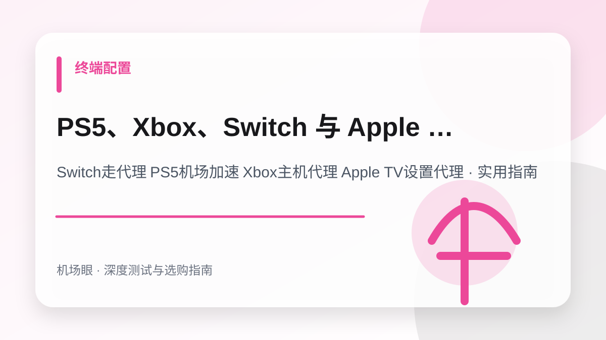

终端配置 · 2026-10-14
PS5、Xbox、Switch 与 Apple TV 怎么走机场代理？软路由、局域网共享与热点分流教程
PS5、Xbox、Switch 与 Apple TV 怎么走机场代理？软路由、局域网共享与热点分流教程。针对Switch走代理 PS5机场加速 Xbox主机代理 Apple TV设置代理提供深度选购与排障实战手册，涵盖架构对比、配置方案、避坑清单与故障排查技巧。
搜索“Switch走代理 PS5机场加速 Xbox主机代理 Apple TV设置代理”时，真正需要解决的不是单纯寻找一个服务名称，而是建立一套从网络底层逻辑、成本模型、安全风控到实战配置的完整决策体系。本文面向需要流畅联机对战、跨区商店下载、更新补丁或在电视盒子上看 4K Netflix 的主机玩家与家庭影音用户，为你深度拆解核心技术原理与实测避坑指南。
先给结论：选购与排障的核心要点
游戏主机与智能电视大多无法直接安装代理软件，核心解决路径有三条：电脑端客户端开启局域网共享（Allow LAN）、OpenWrt 软路由透明网关、或 Apple TV tvOS 原生代理客户端；实战关键在于优化 NAT 类型至 Open/Type A 并调整 MTU 避免拆包重传。在实际网络环境中，任何节点的表现都会受到本地运营商网络、骨干网互联质量、客户端协议栈实现以及目标平台风控规则的综合制约。因此，不要盲从网上的单一测速截图，必须结合自身使用场景进行针对性验证。
为什么这个话题在 2026 年成为热搜刚需
主机玩家常常面临两难境地：Switch 进 eShop 提示错误代码 2811-7503、联机《喷射战士》频繁掉线；PS5 更新 50G 的游戏补丁速度只有几百 KB/s；Xbox 登录微软账号无限转圈。市场上专门的主机加速盒子每年收费上百元且只能加速游戏，无法解锁影音。其实只要利用好现有的专线机场订阅，通过电脑局域网共享或一台百元级的软路由，就能零成本实现全屋主机的高速满速下载与极低延迟联机对战。
典型应用场景与决策依据
例如一位玩家客厅有一台 Nintendo Switch 和 Apple TV 4K。平日只需在内网主力 Windows 电脑上的 Clash Verge Rev 开启‘允许局域网连接’，在 Switch 网络设置里填入电脑内网 IP 与 7897 端口，eShop 秒进，动森联机 NAT 直接变成 A 型；而在 Apple TV 上安装 tvOS 版 Sing-box，电视大屏观看 4K HDR 杜比视界完全不卡顿。
四大主机与电视盒子代理方案全方位对比
| 方案类型 | 硬件与额外成本 | 配置门槛与耗时 | NAT 类型联机质量 | 适用核心场景 |
|---|---|---|---|---|
| 电脑客户端局域网共享 | 零成本 (利用现有电脑) | 简单 (2 分钟快速设置) | NAT B (良，适合商店/下载) | Switch/PS5 游戏下载与商城购买 |
| Apple TV 原生客户端 | 仅需 tvOS 17 以上设备 | 简单 (App Store 直接下) | NAT B / A | 电视端 4K 追剧与兼任家庭网关 |
| OpenWrt 软路由透明网关 | 需工控机/硬路由 (100~300元) | 中高 (需刷机和配置分流) | NAT A (极致，完全开放) | 多主机开黑、全屋智能设备无感加速 |
| 手机热点分流转发 | 利用安卓/iPhone 热点 | 中等 (需配合热点共享软件) | NAT C / D (受蜂窝网络限制) | 出差在外、临时紧急更新补丁 |
方案一详解：电脑开启 Allow LAN 零成本配置 Switch / PS5
这是绝大多数玩家最推荐的免折腾方案，只需一台和游戏主机处于同一个 Wi-Fi / 路由器的电脑：
- 电脑端开启局域网共享：打开 Clash Verge Rev 或 Clash for Windows，在设置中勾选 「允许局域网 (Allow LAN)」。记下当前的混合端口号（默认为
7897或7890）。 - 查看电脑内网 IP 地址：在电脑上按
Win + R键输入cmd，输入ipconfig回车，找到 IPv4 地址（通常为192.168.1.X或192.168.31.X）。 - 主机端手动设置代理：
以 Nintendo Switch 为例：进入「系统设置」→「互联网」→「互联网设置」→ 选择当前 Wi-Fi →「更改设置」；
找到 「代理服务器设置」，将其从“关闭”改为“开启”；
在 「服务器」 栏填入步骤二的电脑 IP（如192.168.1.105）；
在 「端口」 栏填入步骤一的端口号（如7897）；
保存设置并进行连接测试，eShop 与联机下载瞬间拉满宽带！
方案二详解：Apple TV 4K 原生运行 Sing-box / Loon 独立分流
自苹果发布 tvOS 17 系统后，Apple TV 已原生支持网络扩展框架，无需任何软路由即可独立科学上网：
- 客户端选择：在美区 Apple ID 的 App Store 中下载 Sing-box、Loon、Surge 或 Quantumult X 的 tvOS 专属版本。
- 订阅导入：通过手机端扫码或通过 iCloud 云同步，将专线机场订阅直接推送到 Apple TV 上。
- 兼任家庭旁路由网关：在 Surge 或 Sing-box 设置中开启「Enhanced Mode」或旁网关模式，Apple TV 即可在低功耗状态下充当全家主机的默认网关，连电视关机都不影响主机联机。
选购与实测需要关注的四个核心指标
- 游戏主机与提供代理的电脑/路由器必须处于同一物理网段（同一局域网 Wi-Fi）
- 电脑端客户端的 Allow LAN 开关必须处于开启状态，且系统防火墙允许该端口通信
- 主机联机测试时 NAT 类型需达到 NAT Type A (Switch) 或 NAT Type 2 (PS5)
- 用于主机加速的专线机场节点必须完整支持 UDP 数据包转发协议
推荐的标准化实操流程
- 在电脑客户端中开启 Allow LAN 允许局域网连接，并获取当前电脑内网 IPv4 地址
- 在 PS5 / Switch / Xbox 网络设置中开启 HTTP 代理，并正确填入电脑 IP 与端口
- 进行主机网络连通性测试，验证下载速度与 Nintendo eShop / PS Store 连接
- 游戏联机对战时，在客户端中选择延迟最低且支持 UDP 的专线节点
最常见的四个认知误区与避坑建议
- 电脑连的是 5G Wi-Fi，主机连的是 2.4G 访客网络（AP隔离），导致无法互通
- 主机端使用了只支持 TCP 的廉价中转节点，导致联机游戏直接报错掉线
- 玩游戏时忘记电脑休眠设置，电脑休眠后主机代理通道瞬间断开
- 在主机代理中手动乱改 MTU 数值导致大量数据包分片丢包
常见问题深度解答 (FAQ)
电脑开启 Allow LAN 代理后，Switch 怎么测试连接一直提示‘代理服务器错误’？
90% 是 Windows 防火墙拦截造成的。请在电脑的 Windows Defender 防火墙设置中，找到 Clash 核心程序并勾选‘允许在专用网络和公用网络中通信’；或者检查电脑是否安装了第三方杀毒软件。
用机场节点加速游戏主机，会被索尼 PSN 或任天堂封禁主机（BAN机）吗？
完全不会。任天堂和索尼官方只封禁‘破解机、修改存档、黑卡充值、跨低价区信用卡盗刷’等违规行为。正规专线节点只是加速数据传输，数以百万计的全球玩家都在使用代理加速，完全符合平台正常网络规范。
Switch 联机对战（如喷射战士、任天堂大乱斗）NAT 为什么总是 C 型或 D 型？
因为你的代理节点没有开启 Full Cone NAT 支持或未开放 UDP。请切换至带有‘IEPL 专线’或明确标注‘Full Cone NAT / 游戏专线’的节点，NAT 即可从 C 提升至 A 或 B，匹配队友速度提升 10 倍。
总结与下一步建议
面对日益复杂的网络监管环境与海外平台风控策略，Switch走代理 PS5机场加速 Xbox主机代理 Apple TV设置代理的关键在于回归需求本质——不要试图用单一廉价方案解决所有问题。合理建立“主力专线 + 备用容灾 + 协议分流”的弹性架构，才能在多变的环境中获得长期稳定体验。